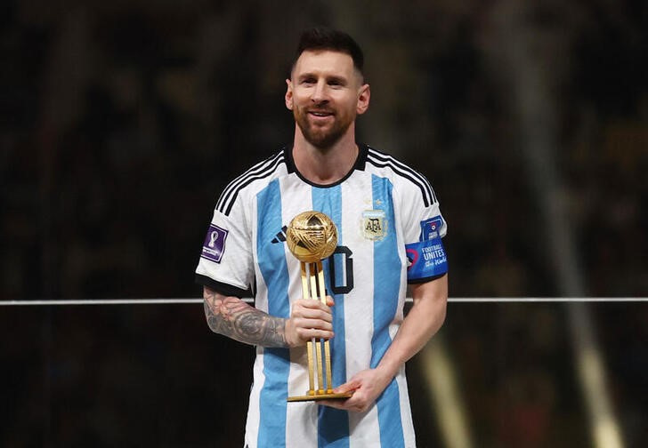
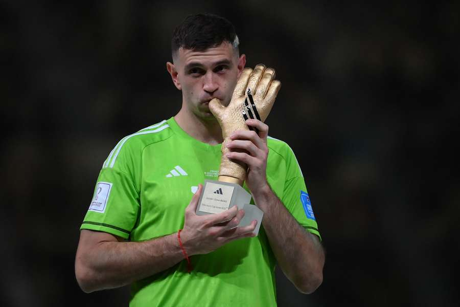

Premios Individuales
PREMIOS MUNDIALES
Al finalizar el torneo, además de la copa del mundo a la selección tambien se entregan los siguientes premios individuales.

- Balón de oro > Premio al mejor jugador

- Bota de oro > Premio al máximo goleador

- Guante de oro > Premio al mejor portero.